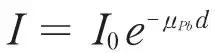
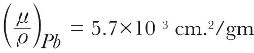
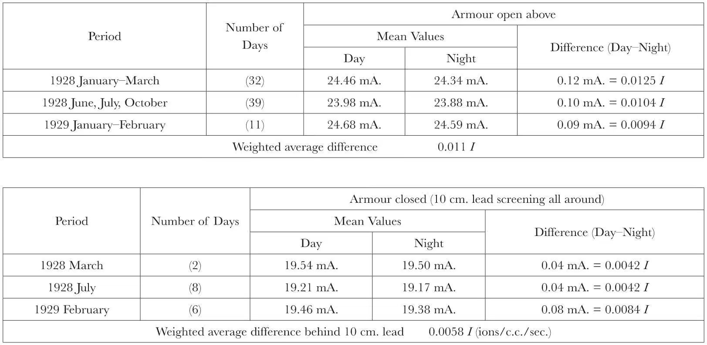

中文
中文V. F. Hess
Editor’s Note
Physicists were still pondering the nature of cosmic rays. Earlier studies failed to find any evidence that the Sun emitted such rays, but here Victor Hess reports new experiments showing that it does. As he notes, recent experiments at high altitude in the Swiss Alps found the average intensity of radiation to be higher during the day and lower at night. Further experiments with lead shielding showed that the Sun’s light included a component of highly penetrating rays, with intensity equal to about 0.5 percent of the total observed cosmic ray intensity. Hess argues that cosmic rays most probably have a stellar origin, as all other stars probably emit them much as the Sun. The precise nature of these particles remained unknown. 中文
WHILE in former years all observers were agreed that the sun does not contribute any noticeable amount to the total intensity of the cosmic ultra-radiation, the increase in the sensitivity of the apparatus used within recent years, and the increase in the number of observations made at different stations and under different experimental conditions, makes it possible to investigate once more whether the influence of the sun is altogether negligible. 中文
Very accurate and trustworthy registrations of the cosmic radiation have been carried out with Prof. G. Hoffmann’s high-pressure ionisation chamber at Muottas Muraigl (2,456 m. above sea-level) in the Engadine. These measurements show, beyond any doubt, that the average intensity of the radiation is somewhat greater in daytime than during the night. G. Hoffmann and F. Lindholm1 give the average difference between day and night intensities as 0.12 mA., ~0.0125 ions per c.c. per sec. while the apparatus was unscreened from above, and 0.04 mA., ~0.0042 I with a lead-screening of 6 cm. and 9 cm. thickness. (The letter “I” always denotes “ions per c.c. and sec.”.) F. Lindholm,2 with the same apparatus, found from longer series of observations (8 months) the values in the accompanying table (see Table 6 of his paper). 中文
In Hoffmann and Lindholm’s apparatus a compensation current of one milliampere corresponds to an ionisation of 0.104 I. Therefore the total intensity of the ultra-radiation with the apparatus unscreened from above was about 2.50 I at Muottas Muraigl. 中文
The difference between day and night intensity can be taken, provisionally at least, as the actual intensity of the solar penetrating radiation. One can see at once that at Muottas Muraigl, 2,456 m. above sea-level, about one-half of this solar radiation component is able to penetrate through 10 cm. of lead. This component is therefore far more penetrating than the gamma rays from radioactive substances. If we assume that all of the above-mentioned 0.011 I is of solar origin, we can compute the absorption coefficient in lead μPb (it will suffice to take the case of perpendicular incidence) from the equation

taking I0 = 0.011, I = 0.0058, and d = 10 cm.; thus we obtain μPb = 0.064 cm.–1 and the mass absorption coefficient
. 中文
This value is almost exactly equal to the mass absorption coefficient value of the total cosmic radiation at the same altitude ((μ/ )Pb= 6.3×10–3 cm.2/sec. as found by Büttner on the Eiger glacier 2.3 km. above sea-level).3 If we assume that part of the (0.011 I) difference between day and night values with unscreened apparatus is due to an increase in the average content of radium emanation and its products in the air during daytime, then we should get an even more pronounced hardness of the solar penetrating rays, that is, a smaller value for their mass absorption coefficient. Therefore we are justified in concluding that the sun emits penetrating rays of at least the same penetrating power as the well-known cosmic ultra-radiation. The total amount of the solar penetrating rays (at 2,456 m. above sea-level) is about one-half percent of the total intensity of the cosmic radiation, as it is seen from the accompanying table. Of course, one might think it possible to explain the increase in the total radiation during daytime as due to an indirect influence of the sun (that is, an increase in the scattering of the ultra-rays by the heating of the atmosphere during the day). In this case, however, one would expect that this scattered radiation, represented by the difference between the day and night values, would be much softer than the general cosmic radiation; but this is in contradiction to the experimental results analysed above. 中文
)Pb= 6.3×10–3 cm.2/sec. as found by Büttner on the Eiger glacier 2.3 km. above sea-level).3 If we assume that part of the (0.011 I) difference between day and night values with unscreened apparatus is due to an increase in the average content of radium emanation and its products in the air during daytime, then we should get an even more pronounced hardness of the solar penetrating rays, that is, a smaller value for their mass absorption coefficient. Therefore we are justified in concluding that the sun emits penetrating rays of at least the same penetrating power as the well-known cosmic ultra-radiation. The total amount of the solar penetrating rays (at 2,456 m. above sea-level) is about one-half percent of the total intensity of the cosmic radiation, as it is seen from the accompanying table. Of course, one might think it possible to explain the increase in the total radiation during daytime as due to an indirect influence of the sun (that is, an increase in the scattering of the ultra-rays by the heating of the atmosphere during the day). In this case, however, one would expect that this scattered radiation, represented by the difference between the day and night values, would be much softer than the general cosmic radiation; but this is in contradiction to the experimental results analysed above. 中文
Recent observations of R. Steinmaurer4 on the summit of the Sonnblick (3,100 m. above sea-level) in the summer of 1929, made with three different instruments (two of the Kolhörster double loop-electrometer type and one of the Wulf–Kolhörster type), also show clearly that the total ultra-radiation in daytime is slightly higher than at night; the difference amounts to about 0.7 percent (0.06 I, average difference for the three forms of apparatus mentioned above, the total intensity on the Sonnblick being about 8.7 I with the screening open on the top). The increase of radiation was also observed with apparatus screened with 7 cm. iron all around, but the number of these observations on the Sonnblick is not sufficient for quantitative calculations. It may be mentioned that even in the old observations on the summit of the Obir (2,000 m. above sea-level), made by V. F. Hess and M. Kofler,5 the solar influence is noticeable (the total intensity of the ultra-radiation plus earth-radiation during the day being 11.11, during the night 11.09 I, in the average for 13 months), although at that time the apparatus were not screened from the earth radiation. The difference of 0.02 I was—at that time—considered as practically amounting to zero. 中文
Observations with apparatus of the Wulf– or Kolhörster type for shorter periods (like those of Kolhörster–v. Salis on the Jungfraujoch, on the Mönch, and of Büttner at other places in the Alps) naturally do not show the influence of the solar component of the ultra-rays, on account of the lesser degree of accuracy of the means; therefore Corlin,6 using the observations on the Mönch and the Zugspitze, came to negative conclusions as to the solar influence. From the data given below it is quite safe to conclude, according to the most accurate and most numerous observations at present available, that the sun contributes an amount of about 0.5 percent to the total intensity of the cosmic ultra-radiation at 2.5 km. above sea-level. The penetrating power of the solar ultra-rays is at least as great as that of the total cosmic radiation. There is no doubt that this solar component of the ultra-radiation is also present at lower levels; on account of its very small absolute intensity it will, of course, be far more difficult to prove its existence in these levels. An analysis of the very accurate registrations of the total radiation by Hoffmann and Steinke in Königsberg and in Halle in this direction might be successful. 中文

If the sun, as the fixed star nearest to our planet, emits rays of about the same qualities as the total cosmic penetrating radiation, one cannot but assume that all fixed stars are sources of a radiation of similar qualities. The sun being a relatively old star of the yellow dwarf type may, of course, be expected to yield far less total quantity of the ultra-penetrating radiation than, for example, the younger giant stars. Naturally, the ultra-penetrating rays which we observe can only come from the outermost layers of the stars, since they are not able to penetrate material layers of more than a few hundred metres water equivalent. 中文
It is not possible, at present, to say more about the nature of these stellar ultra-rays: whether they are electrons or protons accelerated in cosmic electric fields, or indeed photons (quanta) created by atomic mass shrinking or annihilation processes. This hypothesis of a partly stellar origin of the ultra-penetrating cosmic radiation does not necessarily exclude the possibility that another part of this radiation is created in interstellar space by the formation of certain elements out of hydrogen, according to Eddington’s and Millikan’s ideas, although the principle of minimum hypothesis would rather induce us to try whether the stellar origin hypothesis, based on the experimental evidence of the solar ultra-penetrating rays, would suffice to explain the observed facts. 中文
The conclusions put forward in this note certainly support the original ideas of Prof. Nernst first mentioned in 1921.7 A few years ago, when the first results of observations on the daily period according to sidereal time were published, he wished that it were possible to increase the sensitivity of our apparatus until we could detect the ultra-rays from a single stellar nebula or a single star. I think the results put forward here indicate that a modest beginning has been made in this direction. At least it has been possible now to detect the influence and the penetrating power of the ultra-rays from the sun. It may be added that the evidence here brought forward for a stellar origin of the cosmic ultra-rays is completely independent of the existence of a daily period according to sidereal time, a subject which is still under discussion. 中文
(127, 10-11; 1931)
Victor F. Hess: Institute of Experimental Physics, University of Graz, Austria, Nov. 4.
References:
1. Gerlands Beitr. z. Geophysik, 20, 52 (1928).
2. Gerlands Beitr. z. Geoph., 26, 416-439 (1930).
3. Zeitschr. f. Geophys., 3, 179 (1927).
4. Sitz. Ber. Akad. d. Wiss. Wien, II. a. 139, 281-318 (1930).
5. Phys. Zeitschr., 18, 585 (1917).
6. Zeitschr. f. Physik, 50, 808-848 (1928).
7. Das Weltgebäude im Lichte der neueren Forschung (Verlag Springer, Berlin).